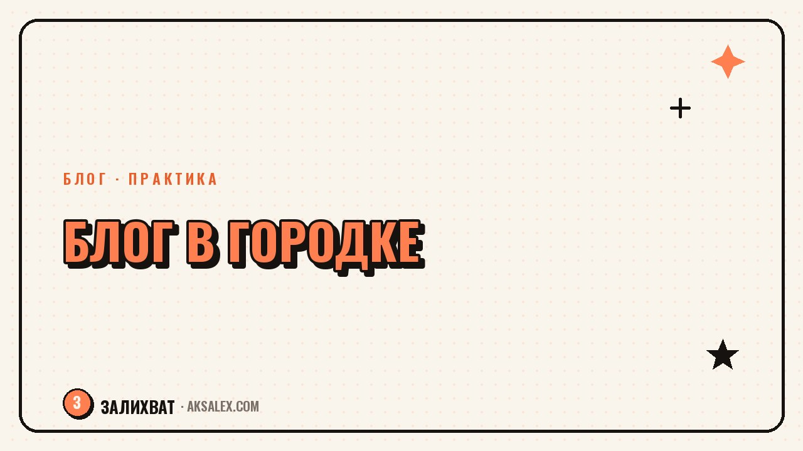

Как вести блог в маленьком городе и найти свою аудиторию

Советы по блогингу почти всегда написаны с прицелом на миллионники: конкуренция там огромная, а охваты измеряются сотнями тысяч. В маленьком городе правила другие - аудитория меньше, зато она теснее, а конкурентов в узкой нише может не быть вообще. Главный страх при этом не в охватах, а в том, что все знакомые увидят блог и начнут обсуждать. С этим страхом и с реальными особенностями маленького города разберём по порядку.
Чем блог в маленьком городе отличается от блога в миллионнике
В большом городе блогер конкурирует за внимание с тысячами похожих аккаунтов, и выделиться сложно просто по теме. В маленьком городе ситуация обратная: если ты, например, единственный, кто снимает обзоры кофеен или ведёт родительский блог именно в этом городе, у тебя автоматически есть локальное преимущество, которое не купить никакой рекламой.
Минус в том, что чистый охват меньше: в городе с населением в 50 тысяч человек даже идеальная вовлечённость местной аудитории даст показатели скромнее, чем у блогера из мегаполиса. Поэтому цели стоит ставить свои, а не сравнивать себя с чужими цифрами из другого контекста.
Как найти свою тему, которая работает именно в малом городе
Темы, которые часто работают локально
- Обзоры мест: кафе, парки, маршруты для прогулок с детьми
- Локальные новости и события глазами обычного человека, а не официального паблика
- Советы по быту, которые касаются конкретно вашего города: дороги, услуги, сервисы
- Личный блог про профессию или хобби, где город - просто фон, а не главная тема
Если тема не привязана к городу напрямую - например, ты пишешь про нейросети или рукоделие - локация вообще не обязана быть в центре внимания. Можно вести тематический блог, который интересен людям из любого города, а свою местность упоминать между делом, без акцента.
Страх "меня узнают знакомые" и что с ним делать
В маленьком городе высокая вероятность, что блог увидят соседи, коллеги, бывшие одноклассники - и это пугает сильнее, чем в большом городе, где можно спрятаться за анонимностью. Тут помогает заранее продумать границы: что ты готова показывать публично, а что оставляешь только для себя.
Страх, что узнают знакомые, часто сильнее самого факта узнавания. На практике большинство людей пролистывают контент мимо, не обсуждая его так подробно, как кажется в голове автора.
Если совсем не хочется светить лицом перед знакомыми, можно начать с формата без лица в кадре: голос за кадром, съёмка рук, текстовые посты с иллюстрациями. Это снижает тревогу на старте, а дальше решение показывать лицо можно принять, когда появится больше уверенности.
Как снимать контент, если локаций в городе немного
В маленьком городе набор фоновых локаций ограничен, и быстро возникает ощущение, что все ролики снимаются на одном и том же фоне. Решение - не искать новые места, а менять подход к съёмке: время дня, крупность кадра, формат подачи одной и той же локации.
| Подход | Что меняется | Когда использовать |
|---|---|---|
| Разное время суток | Свет, настроение кадра | Если локаций физически мало |
| Разная крупность | Общий план vs деталь крупным кадром | Чтобы один фон не надоедал зрителю |
| Смена формата подачи | Обзор vs история vs список советов | Когда тема повторяется, а подача разная |
| Выезд в соседний город раз в месяц | Новый визуальный ряд | Для разнообразия, не как основа контента |
Как расти без миллионных охватов
В малом городе рост часто идёт не через вирусные ролики, а через офлайн-знакомства: если тебя узнают на улице и относятся доброжелательно, это конвертируется в подписчиков лучше любого таргета. Полезно участвовать в местных мероприятиях, сотрудничать с локальным бизнесом и упоминать блог там, где это естественно, а не навязчиво.
Стоит также присмотреться к соседним городам и регионам - если тема не строго локальная, аудитория может собираться из нескольких городов со схожим укладом жизни. Это снимает ограничение одного населённого пункта и даёт более здоровую базу для роста, не теряя при этом локальной атмосферы, которая и отличает такой блог от блога из столицы.
Частые вопросы
Можно ли вести успешный блог, если город совсем маленький?
Да, можно, если не сравнивать свои охваты с блогерами из мегаполисов. В маленьком городе аудитория компактнее, но часто более вовлечённая, а конкуренция в узкой локальной теме может быть минимальной или отсутствовать вовсе.
Как перестать бояться, что блог увидят знакомые в маленьком городе?
Помогает заранее продумать границы того, что ты готова показывать публично, и начать с формата без лица в кадре, если тревога сильная. На практике большинство знакомых реагируют спокойнее, чем кажется заранее в голове.
Какие темы для блога подходят именно маленькому городу?
Хорошо работают обзоры локальных мест, бытовые советы, привязанные к конкретному городу, и личные блоги про профессию или хобби, где город - просто фон. Если тема не завязана на локацию, можно вообще не делать на ней акцент.
Что делать, если в городе мало интересных мест для съёмки контента?
Не обязательно искать новые локации - можно менять время съёмки, крупность кадра и формат подачи одного и того же места. Разнообразие в подаче часто важнее разнообразия фона.
Как расти в маленьком городе без вложений в рекламу?
Рост часто идёт через офлайн-знакомства, участие в местных мероприятиях и сотрудничество с локальным бизнесом. Если тема не строго локальная, стоит рассматривать аудиторию из соседних городов со схожим укладом жизни.
Раз тема оказалась полезной, вот что почитать следующим. Раскритиковали твоё дело, и хочется всё бросить? Разбираем, как пережить это и двигаться дальше.
Читать статью →а не вручную